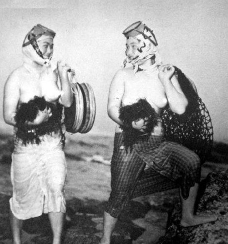
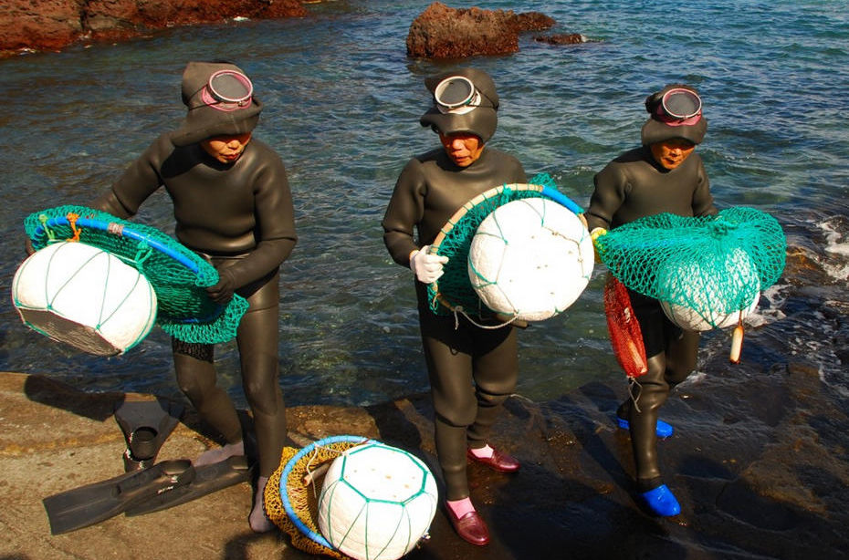
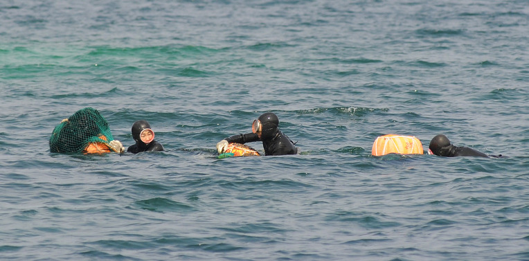
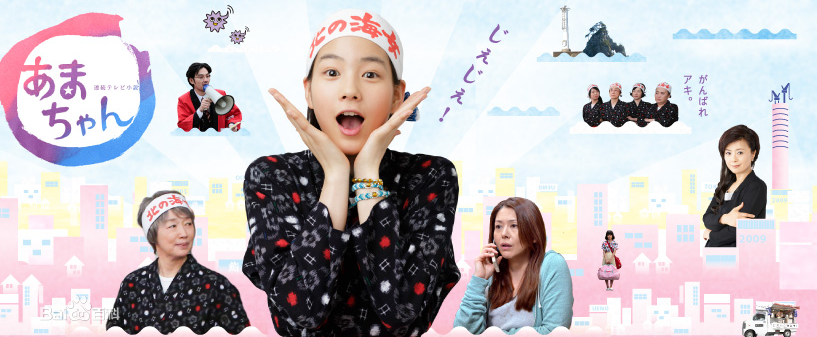

Ama (also called Haenyeo in South Korea, Hangul: 해녀; lit. sea women), uminchu (in Okinawan) or kaito (in the Izu Peninsula) are Japanese divers, famous for collecting pearls. The majority of ama are women.
Japanese tradition holds that the practice of ama may be 2,000 years old. Traditionally, and even as recently as the 1960s, ama dived wearing only a loincloth. Even in modern times, ama dive without scuba gear or air tanks, making them a traditional sort of free-diver.

Records of the female pearl divers, or ama, date back as early as 927 AD in Japan's Heian period. Early ama were known to dive for seafood and were honored with the task of retrieving abalone for shrines and imperial emperors. Ama traditionally wear white as it was believed to ward off sharks. Early divers wore only a loin cloth but in the 20th century the divers adopted an all-white sheer diving uniform in order to be more presentable while diving. Pearl diving ama were considered rare in the early years of diving. However, Mikimoto Kokichi’s discovery and production of the cultured pearl in 1893 produced a great demand for ama.
Nowadays, the pearl diving ama are viewed as a tourist attraction at Mikimoto Pearl island. The number of ama continue to dwindle as this ancient technique becomes less and less practiced due to disinterest in the new generation of women and the dwindling demand for the diving women. In the 1940s 6000 ama were reported active along the coasts of Japan while today ama practice at numbers more along the scale of 60 or 70 divers in a generation.
Women began diving as ama as early as 12 and 13 years old, taught by elder ama. Despite their early start, divers are known to be active well into their 70s and are rumored to live longer due to their diving training and disciplines. In Japan, women were considered to be superior divers due to the distribution of their fat and their ability to hold their breath. As described above, the garment of the ama have changed throughout time from the original loincloth to white sheer garb and eventually to the modern diving wetsuit. The world of the ama is one marked by duty and superstition. One traditional article of clothing that has stood the test of time is their headscarves. The headscarves are adorned with symbols such as the seiman and the douman which have the function of bringing luck to the diver and warding off evil. The ama are also known to create small shrines near their diving location where they will visit after diving in order to thank the gods for their safe return.
width="500" height="300"/>The ama were expected to endure harsh conditions while diving such as freezing temperatures and great pressures from the depths of the sea. Through the practice, many ama were noted to lose weight during the months of diving seasons. Ama practiced a breathing technique in which the divers would release air in a long whistle once they resurfaced from a dive. This whistling became a defining characteristic of the ama as this technique is unique to them.
• James Bond travels to Japan in the novel You Only Live Twice. He meets and becomes involved with ama Kissy Suzuki. The character was also portrayed in the film version.
• The Dream of the Fisherman's Wife, an 1814 woodblock print by Japanese artist Hokusai, depicts a young ama diver entwined sexually with a pair of octopuses.
• Ama Girls, a 1958 documentary film; winner of the Academy Award for Documentary Short Subject.
• Amanchu! is a Japanese manga series, later adapted into an anime. Its name is a longer version of the word ama, and its subject matter involves female divers
 width="650" height="275"/>• Maraini, Fosco (1962). Hekura: The Diving Girls' Island (English edition translated from Italian). London: Hamish Hamilton.
• Martinez, D. P. (2004). Identity and Ritual in a Japanese Village University of Hawaii Press. ISBN 978-0-8248-2817-2
• Mishimo, Yukio (1994). The Sound of Waves. Vintage. ISBN 978-0-679-75268-4
• Haenyeo – Female occupational divers in the Korean province of Jeju
• Skandalopetra diving – Freediving using a stone weight at the end of a rope to the surface
• Breathing Underwater – A documentary about ama
1. Rahn, H.; Yokoyama, T. (1965). Physiology of Breath-Hold Diving and the Ama of Japan. United States: National Academy of Sciences - National Research Council. p. 369. ISBN 0-309-01341-0. Retrieved 2008-04-25.
2. Wallace, Sue (July 2010). "Legends of the Deep: Japan". Sun Herald.
3. McCurry, Justin (August 2006). "Ancient art of pearl diving breathes its last: Japanese women who mine seabed one lungful of air at a time are last of their kind". The Guardian.